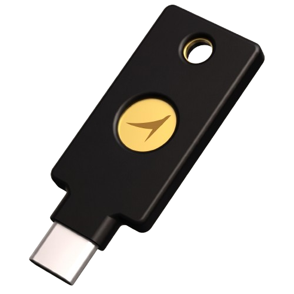

یک دستگاه فیزیکی که کلید دارایی کاربر را خودش میسازد و نگه میدارد.
از لحظهای که فعال میشود، برداشت از آن دارایی به تصمیم ما وابسته نیست —
چون کلیدش اصلاً دست ما نیست.

کلید، نه حساب.
دستگاه در اولین روشنشدن، کلید را داخل خودش تولید میکند. آن کلید هیچوقت
از دستگاه بیرون نمیآید — نه به موبایل کاربر، نه به سرور ما. هر برداشت باید
روی همین دستگاه تأیید شود.
قیمت پیشنهادی: $49 · ارسال رایگان
چرا این را میسازیم
راند اول تست یک چیز را روشن گفت: کاربر بدون اتصال محصول به یک نهاد یا شیء
واقعی، حاضر به ریسک نبود. «دیجیتال بودن» بهتنهایی اعتماد نساخت و هیچ فیچری
آنقدر جذاب نبود که ریسک را توجیه کند.
«نیاز داشتن به یه بنگاهی وصل بشه محصول تا از روی اون اعتماد کنند.»
— جمعبندی راند اول
تحویل فیزیکی طلا یک جواب به این مسئله است. کلید مهاجر جواب دوم است، و
ادعای متفاوتی میکند. برای همین هر دو را داریم و هر دو را جدا تست میکنیم.
تحویل طلا میگوید
«میتوانی بیرونش بکشی.» خروج ممکن است، ولی هنوز از مسیر ما رد میشود.
کلید مهاجر میگوید
«اصلاً نمیتوانیم برش داریم.» نگهداری از ابتدا دست کاربر است، نه ما.
کلید مهاجر · معرفی داخلی۱ / ۳
مهاجرکلید مهاجر · چطور کار میکند
چطور کار میکند
سفارش از داخل اپکاربر از تب «تحویل فیزیکی» سفارش میدهد. فقط بهای دستگاه ($49) کسر میشود؛
مبلغی که برای انتقال کنار میگذارد تا لحظهٔ فعالسازی در آشیانهاش میماند.
ارسال۵ تا ۷ روز کاری. کد فعالسازی همان لحظهٔ سفارش در اپ نمایش داده میشود.
اولین روشنشدندستگاه کلید را داخل خودش میسازد و دوازده کلمهٔ بازیابی نشان میدهد.
کاربر آنها را روی کاغذ مینویسد. ما هیچ نسخهای از این کلمات نداریم.
انتقال داراییمبلغ کنارگذاشته به کلید منتقل میشود. از این به بعد هر برداشت باید روی
خودِ دستگاه تأیید شود.
نگهداری: قبل و بعد
موضوع
صرافیهای رایج
کلید مهاجر
کلید دارایی دست کیست
شرکت
کاربر
برداشت نیاز به تأیید شرکت دارد
دارد
ندارد
اگر شرکت تعطیل شود
دارایی در خطر است
دارایی دست کاربر میماند
اگر شرکت حساب را ببندد
دسترسی قطع میشود
اثری ندارد
اگر کاربر همهچیز را گم کند
شرکت بازیابی میکند
هیچکس نمیتواند بازیابی کند
!ردیف آخر عمداً آنجاست. نگهداری کامل یعنی مسئولیت کامل — و این جمله
در خودِ پروتوتایپ هم روی صفحه هست. محصولی که فقط روی خوبِ self-custody را بفروشد،
همانجایی است که یک کاربر دقیق ما را گیر میاندازد. در اپ هم نوشتهایم که
مهاجر هرگز آن دوازده کلمه را نمیپرسد — متداولترین مسیر کلاهبرداری
علیه این دستهٔ محصول.
مشخصات پیشنهادی
قیمت
$49 · ارسال رایگان
تحویل
۵ تا ۷ روز کاری
اتصال
USB-C · بدون نیاز به باتری
بازیابی
۱۲ کلمه، استاندارد رایج
تأیید برداشت
لمس فیزیکی روی دستگاه
وضعیت
در حال بررسی — تأمینکننده نهایی نشده
کلید مهاجر · معرفی داخلی۲ / ۳
مهاجرکلید مهاجر · در پروتوتایپ و در تست
کجای اپ است
تب تحویل فیزیکی (جایگزین تب فعالیتها شد) دو راه خروج را کنار هم میگذارد.
فعالیتها از «نمای کلی» در دسترس است.
مسیر واقعی در پروتوتایپ: تحویل فیزیکی ← کلید مهاجر.
چه چیزی را تست میکنیم
فرضیه
اگر نگهداری دارایی بهشکل یک شیء فیزیکی در دست کاربر
درآید، مانع اعتماد آنقدر پایین میآید که کاربر حاضر شود اولین پول را وارد کند —
حتی وقتی نام شریک هنوز اعلام نشده است.
لنگر اعتمادقابل روشن/خاموش در پنل تسهیلگرمقایسهپذیر با «تحویل طلا»
✓روش تست: این گزینه یک variant است. جلسه را یکبار با آن و یکبار بدون آن
اجرا کنید تا تفاوت رفتار به خودِ مکانیزم نسبت داده شود، نه به کیفیت کلی اپ.
سؤالهایی که باید در جلسه بپرسیم
«الان که این را دیدی، پولت را کجا نگهداریشده میدانی؟»
«اگر فردا مهاجر تعطیل شود، چه فکری میکنی؟»
«آن هشدار دربارهٔ دوازده کلمه را چطور خواندی؟»
«اگر واقعی بود، $49 میدادی؟ چه چیزی تصمیمت را عوض میکند؟»
!یادآوری برای ارائه: تأمینکنندهٔ دستگاه هنوز نهایی نشده. در هر جایی که
این را نشان میدهیم — داخل اپ و بیرون آن — باید «در حال بررسی» بماند تا قرارداد
قطعی شود.
کلید مهاجر · معرفی داخلی۳ / ۳
برای PDF: دکمه را بزنید، در پنجرهٔ چاپ
Destination = Save as PDF و Background graphics را روشن کنید.